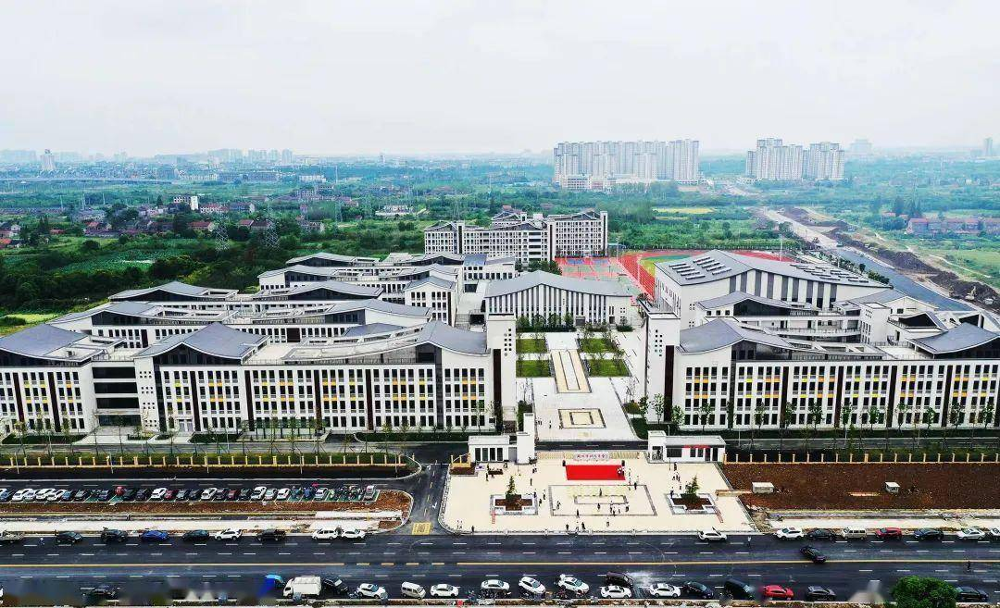

学校简介
荆州市北门中学位于历史文化名城--古城荆州小北门外荆州大道67号。校园面积108亩，现有专任教师240人，在校学生3364人，49个教学班，是一所以高中为主体的区直完全中学。
2009年，湖北省普通高中课程改革全面启动，学校以湖北省重大项目研究为契机，以课堂教学改革为抓手，强力打造高效课堂，逐步形成了具有"北中"特色的"生本・自主"高效课堂教学模式，提升了学校的办学水平，为学校赢得了广泛的社会声誉。
近六年来，学校教育教学质量突飞猛进，高考本科上线率连续保持高位状态，特别是以李倩倩、李自汉、李卫东、李雨暄、宋成伟、伍小龙、李�h、杨岑岑、马梦云等为代表的优秀学子分别考入了清华大学、中国科学技术大学、中国人民大学、中央美术学院、中国美术学院、中央音乐学院、武汉大学、华中科技大学等知名学府。学校师资队伍雄厚，有省市级骨干教师35人。课改以来，全校教师为全国各地来校考察的400多所学校10000多名教师作了100多场报告，执教示范课1500多节;80多名教师应邀赴广东、云南、贵州、辽宁、四川、湖南、江西、河北、陕西、山西、黑龙江等10多个省市100多所学校讲课讲学。
学校先后获得"荆州市示范学校""荆州市'五一'劳动奖状""荆州市教育科研示 范学校""荆州市义务教育阶段课改样本校" "荆州市高考优胜单位" "荆州市高考突出贡献奖""荆州市高考特别贡献奖""湖北省现代教育技术实验学校""湖北省安全文明校园""湖北省'五一'劳动奖状""全国德育实验先进学校""全国课堂教学创新示范学校""全国特色学校""全国高效课堂新九大范式学校"等荣誉，并成为中国教师报・名校共同体理事校、中国教师报・全国教师培训基地合作校、全国课改百校联盟单位。《中国教师报》、《湖北日报》、《湖北教育》、湖北电视台、荆州电视台等多家媒体也对学校课堂改革的成效予以了广泛关注和连续报道。
优良的育人环境，浓厚的学习氛围，雄厚的师资队伍，显著的课改业绩 ，昭示着北门中学引领湖北省课改潮流的强劲势头。北门中学是湖 北省基础教育课程改革中盛开的一朵奇葩，是莘莘学子立志成才、幸福成长的摇篮。
校园地址
荆州大道93号
发展理念
2009年，学校大胆改革传统课堂教学方式，实行"生本・自主"高效课堂模式，学生由被动学习转变成主动学习，从"要我学"转变成"我要学"，学生真正成了课堂的主人，孩子们在课堂上快乐学习，幸福成长。北门中学"高效课堂"教学模式引起了全省教育界的广泛关注。2009年12月，省教育厅指定校长张新汉在全省普通高中课程改革推进会上作典型发言，交流经验，引起强烈反响!教育部、省教育厅等各级领导多次莅临学校视察工作，对学校的办学业绩给予了高度评价。省内外300多所学校超过6000人次到校参观、学习和考察。
如今，学校教学质量突飞猛进，高考本科上线率连续八年保持高位状态。学校连续五年荣获荆州市高考五大"优胜学科奖"、连续九年荣获"荆州市高中教学工作先进单位"的光荣称号。2010年高考，北门中学再创新高，取得 了辉煌的成绩，多人被国内顶尖级高校录取，实现了几代北中人的梦想，开创了北门中学建校以来的新纪元。李倩倩以668分勇夺荆州考区理科状元，被清华大学录取;李伟东以652分，被中国科学技术大学录取;李雨暄被中国人民大学录取;伍小龙、蔡健被中国美术学院录取;曹晓军被空军航空大学录取;廖卫捷被北京体育大学录取……为了表彰北门中学高考做出的突出贡献，2010年8月22日上午，荆州区委、区政府召开了"2010年高考祝捷表彰大会"，这是荆州区委、区政府对学校最高级别的奖励。
2012年高考，北门中学再创辉煌，全校1037人参考，上一本重点线331人，上一、二本线524人，上三本线876人，本科上线率高达85%。高考揭榜之日，荆州电视台"荆州新闻"、湖北卫视"中国行"栏目等众多媒体以"高效课堂彰显北中魅力"为题再次聚焦北中，全体师生备受鼓舞。
如今，北门中学先后被评为"荆州区教学常规管理先进单位""荆州市高考优胜单位""荆州市示范学校""荆州市教育科研示范学校"""荆州市'五一'劳动奖状""湖北省现代教育技术实验学校""湖北省安全文明校园""全国德育实验先进学校""全国课堂教学创新示范学校""中国教师报・名校共同体理事校""中国教师报 ・教师培训基地合作校"、"中国绿色高中共同体"""全国特色学校"。北门中学新课堂教学模式引起了全省教育界同行的广泛关注。
.jpg)
{kind=link}